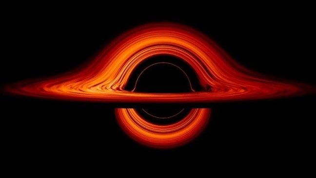

Hello every one I am EYOAB but you can call me JOAB and I love learning about the universe, stars, planets, and specially black holes. So what is blackhole? Blackholes are dead stars that have vary big mass that curve the space time vary hardly, and because of that any thing that get inside will never gose out even the fastest thing in the univers couldn't getout of it and that is the mysterious thing (it's gravity can affect the light while light has no mass) and that's why i get obsessed about blackholes.
Black holes are among the most mysterious objects in the universe. They have an extremely strong gravitational field that creates a region called the event horizon. Once something crosses this boundary, it cannot escape back out, not even light. Scientists study black holes to understand gravity, space, time, and the most extreme conditions in the universe.
Some black holes form when massive stars reach the end of their lives. When these stars run out of the nuclear fuel needed to support them, their cores can collapse under their own gravity. If the core is massive enough, it can form a black hole. However, not all stars become black holes; many end their lives as white dwarfs or neutron stars.
Many people imagine that black holes travel through space swallowing everything around them, but that is not how they work. A black hole's gravity depends on its mass and distance, just like the gravity of other objects. If our Sun were magically replaced by a black hole with exactly the same mass, Earth would continue orbiting it, although we would lose the sunlight and heat needed for life.
This is one of the biggest mysteries in modern physics. According to general relativity, matter collapsing into a black hole can lead toward a region called a singularity, where our current equations predict extreme conditions. However, scientists still do not fully understand what happens at the deepest interior because we need a complete theory combining gravity with quantum mechanics.
One of the strangest predictions of Einstein's theory of general relativity is that time passes differently in different gravitational fields. To a distant observer, a clock near a black hole appears to run more slowly than a clock far away. This effect is called gravitational time dilation. Black holes show us that time is not as simple as we experience it in everyday life.
The first image of a black hole's shadow was released in 2019 by the Event Horizon Telescope collaboration. It showed the supermassive black hole at the center of the galaxy Messier 87. In 2022, scientists released an image of Sagittarius A*, the supermassive black hole at the center of our own Milky Way galaxy. These achievements helped turn one of the most mysterious predictions of physics into something we could observe.